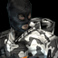
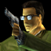
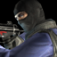
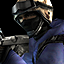
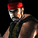
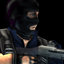
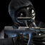
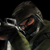

Counter-Strike (también comercializado como Half-Life: Counter-Strike) es un shooter en primera persona multijugador creado inicialmente por Minh Le y Jess Cliffe como mod para Half-Life. En la quinta versión beta, Valve Software comenzó a participar activamente en el desarrollo y finalmente compró los derechos del juego y ofreció a los desarrolladores originales trabajos en la empresa, que ambos aceptaron. Después de aproximadamente un año en las etapas Beta, el primer lanzamiento completo del mod se publicó el 9 de noviembre de 2000 y el juego también estuvo disponible en los minoristas de Norteamérica poco después, el 14 de noviembre de 2000. Desde la creación de la franquicia, se han creado varias secuelas y spin-offs, como Counter-Strike: Condition Zero, Counter-Strike: Source y la última de la serie, Counter-Strike: Global Offensive.
Counter-Strike ha sido elogiado en todo el mundo por su modo multijugador altamente competitivo. La decisión de hacer el juego multijugador solo se remonta a sus orígenes mod. Hacer un juego para un solo jugador hubiera implicado mucho más trabajo ya que los nuevos modelos y el código de AI se habrían necesitado para los enemigos, en comparación con un juego de varios jugadores que requiere mucho menos trabajo.
Hay tres escenarios oficiales, cada uno con sus propios equipos, objetivos y mapas. En todos los casos, los dos equipos son los que se enfrentan contra los terroristas contra los terroristas.
En el lanzamiento minorista original, se incluyó un mapa de entrenamiento corto para un solo jugador, pero este se eliminó cuando el juego se transfirió a Steam.
Existen tres escenarios oficiales en Counter-Strike: Asesinato, rescate de rehenes y desactivación de bombas. Un cuarto escenario, conocido como escape, existió durante el Counter-Strike Beta. El escenario en sí todavía se puede reproducir, pero todos los mapas oficiales se eliminaron antes del lanzamiento del juego.
En este escenario, los rehenes están retenidos por los terroristas. Los mapas oficiales tienen entre 3 y 5 rehenes, aunque la mayoría de los mapas tienen 4 rehenes. El equipo antiterrorista debe rescatar a estos rehenes escoltándolos a una zona de rescate de rehenes. Los terroristas deben evitar que los rehenes sean rescatados. La victoria también se puede lograr eliminando al equipo contrario.
Este escenario presenta dos sitios de bombardeo y un terrorista comienza con un C4. La bomba debe ser plantada en cualquiera de los dos sitios de bombardeo. Después de que la bomba ha sido plantada, explotará después de una cierta cantidad de tiempo. Durante este tiempo, los Counter-Terrorists pueden intentar desactivar la bomba y la desactivación exitosa hará victoriosos a los Counter-Terroristas. Si la bomba explota, los terroristas ganarán la ronda. También es posible ganar una ronda eliminando al equipo contrario.
Este escenario es el menos popular de los tres y solo un mapa único, Oilrig, aparece en la última versión del juego. En este escenario, un solo jugador del equipo antiterrorista asume el rol de un VIP que debe llegar a una zona de escape VIP. Algunos mapas incluyen solo una zona de escape, mientras que otros cuentan con múltiples zonas de escape. Los terroristas tienen que eliminar al VIP y eliminar con éxito al VIP dará la victoria a los terroristas. Ambos equipos tienen un arsenal restringido de armas disponibles para la compra. Al igual que en otros escenarios, la victoria también se puede lograr eliminando al equipo contrario.
Counter-Strike presenta una variedad de armas, desde cuchillos hasta escopetas y ametralladoras. Las armas para Counter-Strike fueron elegidas principalmente en base a dos criterios. Por un lado, las armas tenían que ser satisfactorias para usar y tenían que verse y sonar geniales. El otro criterio era el realismo y las armas que las facciones probablemente usarían en la vida real. El primero de estos criterios se le dio más peso que garantizar la autenticidad.
La inspiración para posibles candidatos de armas se tomó de varias películas. Por ejemplo, la película Ronin inspiró la inclusión de los Krieg 552 y M249. También se tomó una inspiración adicional de las películas Air Force One y Professional.
La mayoría de la información sobre las armas se obtuvo de Internet o de las revistas de armas. Debido a que se disponía de información limitada sobre algunas de las armas, Minh Le tuvo que adivinar cómo podrían haber funcionado algunas armas al animarlas y, por lo tanto, algunos modelos de armas diferencias en comparación con sus contrapartes del mundo real.
Counter-Strike cuenta con un total de 25 armas, algunas exclusivas de los contraterroristas y otras exclusivas de los terroristas. La lista también indica el nombre original de un arma del lanzamiento del mod si corresponde.
| Nombre | Tipo | Equipo | Coste | Capacidad | Daño(Aproximado) |
|---|---|---|---|---|---|
| Glock 18 | Pistola |
Terrorista |
400$ |
20 Balas(100 Totales) |
25 de daño |
| USP | Pistola |
AntiTerrorista |
500$ |
12 Balas(100 Totales) |
25 de daño |
| P228 | Pistola |
Ambos Equipos |
600$ |
13 Balas (52 Totales) |
32 de daño |
| Desert Eagle | Pistola |
Ambos Equipos |
650$ |
7 Balas (35 Totales) |
54 de daño |
| Five-Seven | Pistola |
AntiTerrorista |
750$ |
20 Balas(100 Totales) |
20 de daño |
| Beretas Duales | Pistola |
Terrorista |
800$ |
30 Balas(120 Totales) |
36 de daño |
| Benelli M3 | Escopeta |
Ambos Equipos |
1700$ |
8 Balas (32 Totales) |
180 de daño |
| UMP 45 | Subfusil |
Ambos Equipos |
1700$ |
25 Balas (100 Totales) |
30 de daño |
| P90 | Subfusil |
Ambos Equipos |
2350$ |
50 Balas (100 Totales) |
21 de daño |
| AK 47 | Fusil |
Terrorista |
2500$ |
30 Balas (90 Totales) |
36 de daño |
| M4A1 | Fusil |
AntiTerrorista |
3100$ |
30 Balas (90 Totales) |
32 de daño |
| AWP | Fusil de francotirador |
Ambos Equipos |
4750$ |
10 Balas (30 Totales) |
115 de daño |
Junto con las armas, hay nueve piezas de equipo adquirible, tres de las cuales son granadas. Si se incluyen municiones, la radio y la linterna, el número de equipos aumenta a doce.
| Nombre | Tipo | Equipo | Coste | Uso |
|---|---|---|---|---|
| Granada | Granada |
Ambos Equipos |
300$ |
Hiere al enemigo |
| Granada Flash | Granada |
Ambos Equipos |
200$ |
Desorienta al enemigo |
| Granada de Humo | Granada |
Ambos Equipos |
300$ |
Bloquea las lineas de visión |
| C4 | Bomba |
Terrorista |
N/A |
Explotar en los sitios de bomba |
| Kit de desactivación | Equipamiento |
Antiterrorista |
200$ |
Disminuir el tiempo de desactivación |
| Chaleco Kevlar | Equipamiento |
Ambos Equipos |
650$ |
Reduce el daño recibido |
| Chaleco y Casco | Equipamiento |
Ambos Equipos |
1000$ |
Reduce el daño recibido |
| Visión Nocturna | Equipamiento |
Ambos Equipos |
1250$ |
Da mejor visión en la oscuridad |
| Escudo Tactico | Equipamiento |
Antiterrorista |
2200$ |
Da cobertura movil |
Counter-Strike presenta varias facciones diferentes que están alineadas con los terroristas o los terroristas. La única diferencia entre las facciones del mismo lado es el modelo de jugador que será visible para otros jugadores. Así, por ejemplo, en los mapas con temas de nieve, los jugadores pueden favorecer la elección de los Vengadores del Ártico cuando juegan como terroristas debido a su camuflaje blanco.
Los modelos de jugador de Counter-Strike Beta habían sido creados por Minh Le, sin embargo, para el lanzamiento completo, Valve Software intervino para proporcionar nuevos modelos de jugadores porque los viejos modelos eran ineficientes en términos de recuento de polígonos y tamaños de textura. Estos modelos fueron creados por Chuck Jones y Stephen Theodore. En Counter-Strike 1.1, estos modelos se mejoraron con texturas de mayor resolución y el C4 y el kit de desactivación se volvieron a agregar a los modelos de los jugadores.
Cada equipo tiene cuatro facciones disponibles que los jugadores pueden elegir como su modelo en tercera persona.
| Nombre | Icono | Lado | Origen |
|---|---|---|---|
| Arctic Avenger |  | Terrorista |
Suecia |
| Elite Crew |  | Terrorista |
Medio-Este |
| GIGN |  | Antiterrorista |
Francia |
| GSG-9 |  | Antiterrorista |
Alemania |
| Guerrilla Warface |  | Terrorista |
Medio-Este |
| Phoenix Connexion |  | Terrorista |
Europa del Este |
| SAS |  | Antiterrorista |
Reino Unido |
| SEAL Team 6 |  | Antiterrorista |
Estados Unidos |
Counter-Strike presenta una gran variedad de mapas que se llevan a cabo en diferentes entornos, incluidos entornos urbanos, árticos, selváticos y desérticos. Durante las etapas posteriores a la beta, los mapas todavía se rotaron en la distribución oficial en una escala ligeramente más pequeña. Desde el lanzamiento de Counter-Strike 1.6, no se han agregado ni eliminado mapas del juego.
Cabe señalar que la mayoría de los mapas para el juego fueron creados por personas que originalmente eran simplemente cartografistas aficionados. Cuando Valve Software posteriormente compró los derechos de Counter-Strike y su contenido, estos se convirtieron en los primeros trabajos publicados en el sector minorista para muchos de los diseñadores de niveles.
Aqui podemos ver alguno de los mapas: